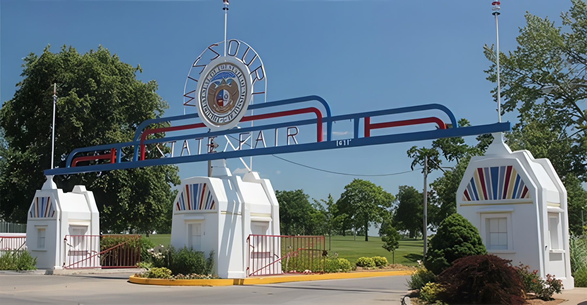
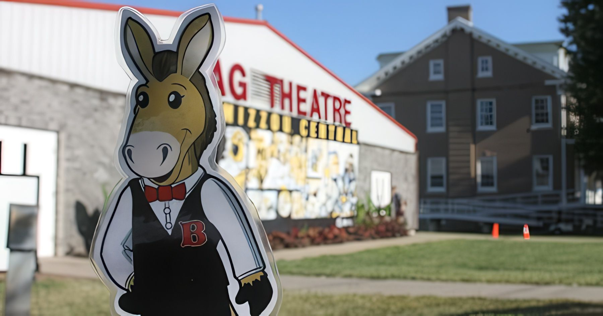
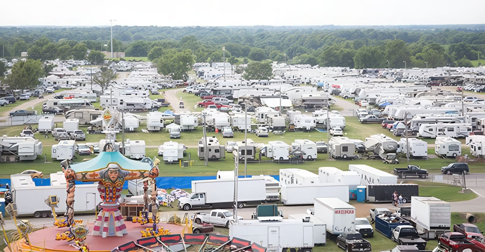
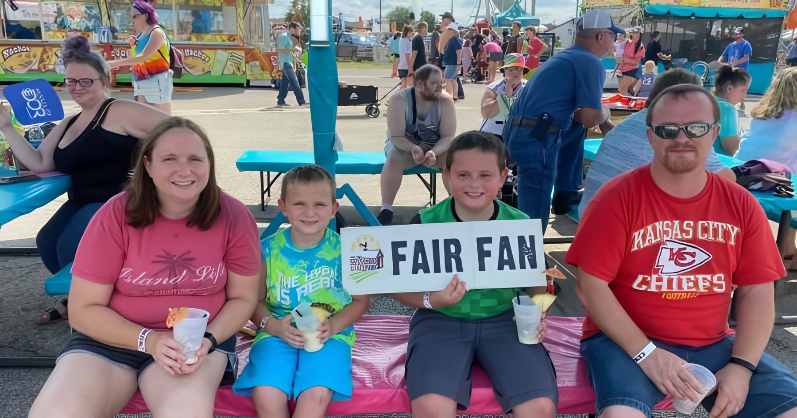

Gates
7:30 am – 10 pm daily
Use Gate 6 (Clarendon Road) after 10 pm.
Aug 12–22, 2027Sedalia, Missouri

Home › Plan Your Visit
Aug 12–22, 2027 · Sedalia
Hours, directions, parking, camping and the little things that make a long Fair day easy — all on one page you can save or print.
On this pageHours · Getting here · Parking · Getting around
MoreCamping · Food · Accessibility · Policies · Alerts
Questions?Call 800-422-FAIR or browse the FAQ
Hours
Gates open at 7:30 am and close at 10 pm every day of the Fair. After 10 pm, use Gate 6 on Clarendon Road.
2026 hours shown · 2027 hours confirmed closer to Fair time
7:30 am – 10 pm daily
Use Gate 6 (Clarendon Road) after 10 pm.
2026 Box Office dates
Times are at the carnival company’s discretion and depend on weather and crowds. Ride wristbands & deals
2027 dates based on the 2026 pattern · confirmed closer to Fair time
| Day | Building exhibits | Outdoor businesses |
|---|---|---|
| Thu, Aug 12 | 9 am – 9 pm | 10 am – 9 pm |
| Fri, Aug 13 | 9 am – 9 pm | 10 am – 9 pm |
| Sat, Aug 14 | 9 am – 9 pm | 10 am – 9 pm |
| Sun, Aug 15 | 9 am – 8 pm | 10 am – 8 pm |
| Mon, Aug 16 | 9 am – 8 pm | 10 am – 8 pm |
| Tue, Aug 17 | 9 am – 8 pm | 10 am – 8 pm |
| Wed, Aug 18 | 9 am – 8 pm | 10 am – 8 pm |
| Thu, Aug 19 | 9 am – 8 pm | 10 am – 8 pm |
| Fri, Aug 20 | 9 am – 9 pm | 10 am – 9 pm |
| Sat, Aug 21 | 9 am – 9 pm | 10 am – 9 pm |
| Sun, Aug 22 | 9 am – 6 pm | 10 am – 6 pm |
Getting here
Missouri State Fairgrounds, 2503 W. 16th St, Sedalia, MO 65301 — at the intersection of Highway 65 and 16th Street.

Highway 65
Home of the Lunch Bunch booth and a daily-guide pickup point.
16th Street
The historic arch on 16th Street.
Highway 65
The taxi entrance. Taxis may not go past the unloading area at the admission gate turnaround lot.
Clarendon Road
The gate to use after 10 pm.
Amtrak’s state-supported, twice-daily train runs between Kansas City and St. Louis with a stop in Sedalia.
| Train | Arrives Sedalia |
|---|---|
| Eastbound from Kansas City | 10:27 am · 5:49 pm |
| Westbound from St. Louis | 11:50 am · 6:42 pm |
Other stops: Independence, Lee’s Summit, Warrensburg, Jefferson City, Hermann, Washington and Kirkwood.
Arriving by taxi or shuttle? Local Sedalia taxi and shuttle services drop off at Gate 11.
Parking
2026 parking prices shown
Free
Single-day general parking costs nothing, and free trams carry you from the lots to the admission gates.
$5 per day, cash only
Every VIP parking dollar is a donation to the Missouri State Fair Foundation.
Hangtags are for livestock exhibitors and concessionaires only — they can’t be purchased by the general public. One-day general parking is free for both.
| Hangtag | Livestock exhibitor | Concessionaire (reserved) |
|---|---|---|
| 1-Day | $5 up to $5.36 with fees | $5 up to $5.36 with fees |
| 6-Day | $30 up to $30.86 with fees | $30 up to $30.86 with fees |
| 11-Day | $55 up to $56.36 with fees | $55 up to $56.36 with fees |
Exhibitor details are in the Premium Guide · Exhibitors · Vendors & concessionaires
Getting around
Trams run on biodiesel.
Courtesy carts, sponsored by Bristol Care, Inc., are available during the Fair.
Information Centers across the grounds help with directions, ATM locations and general Fair questions — and hand out free daily guides and souvenir programs.
Free Wi-Fi, sponsored by GoNetspeed, covers the fairgrounds.
Rentals come from the Missouri State Fair Foundation, open 9 am – 9 pm daily.
| Item | Rental | Price |
|---|---|---|
| Electric mobility scooter | 4 hours | $35 |
| 8 hours | $50 | |
| All day | $60 | |
| Wheelchair | All day | $20 |
| Single stroller | All day | $15 |
| Double stroller | All day | $20 |
Renters must be 21+. Weight limit 350 lbs. 2026 rates

Fair-time camping
The 60-acre public campground sits just west of the fairgrounds on Clarendon Road. About 95 full hook-up sites with 50-amp service (the white section) go first-come, first-served; once they fill, dry camping opens up. Every kind of unit is welcome, tents included.
$45 per day, per vehicle, unit or tent
Up to $46.16 with fees · major credit cards accepted 2026 rate

A pedestrian underpass near the campground exit connects to the fairgrounds. Fair admission is charged at the tunnel — buy a wristband with regular admission to come and go all day.
2026 line-up process · 2027 dates announced closer to Fair time
Have your payment ready and the emergency contact form filled out to speed things along. Camping questions: campgrounds@mda.mo.gov
Food & vendors
Corn dogs, funnel cakes and every fair favorite in between — plus shopping from vendors and concessionaires across the grounds.
Bring your coworkers out for lunch. In 2026, admission was free Aug 17–20, 11 am – 2 pm: buy a special Lunch Bunch ticket at the Centennial entrance after 11 am, return it by 2 pm, and get a full refund. No refunds after 2 pm.
2026 dates · 2027 Lunch Bunch days announced closer to Fair time
Picnic tables are in the parking areas, the Kids Zone behind the MEC Building, in front of the Mathewson Exhibition Center and in the Highway Gardens.
Accessibility & families
Quiet spaces, a sensory-friendly midway and cool places to rest — provided with Center for Human Services and Fair partners.
2026 details shown · 2027 dates confirmed closer to Fair time
Two climate-controlled, quiet spaces with materials and sensory activities for anyone feeling overstimulated.
Anyone under 18 must be with an adult. Surfaces are sanitized after each use.
From noon to 2 pm on two days of the Fair (Fri, Aug 14 and Thu, Aug 20 in 2026), Wade Shows turns off ride music and lights and lowers game microphones. It’s designed for guests with autism spectrum disorder or sensory needs, and everyone is welcome.
A parent or guardian may need to sign an assumption of risk. Watch each ride run at least one full cycle before riding.
An accessible map for easy, quiet travel around the grounds is available at every information booth and online during the Fair.

A 450-square-foot, air-conditioned break spot sponsored by Children’s Trust Fund, with a baby changing and feeding area, wash basin and changing station.
Open daily inside the Log Home with air conditioning, refreshments, maps and Fair information — and the sticker for free tram rides for seniors 60+.
Motorized scooters for guests with disabilities are always welcome. Rent a scooter or wheelchair from the MSF Foundation — see rates.
Policies
Every concert guest is screened with metal detectors or similar devices, and all bags are subject to search. No outside food, drinks or coolers, and no video recording. Prohibited items must go back to your vehicle — the Fair won’t hold them, and unattended items are discarded. Grandstand & shows
Emergency? Tell any Fair staff member or Highway Patrol officer. First Aid is on the west side of the Firehouse, east of the Highway Gardens. Lost something? Check the Missouri State Highway Patrol office.
Stay informed
Sign up for free email or text alerts through GovDelivery for public-safety news and weather updates during the Fair.
Messages are informational and don’t replace other emergency warnings or directions. Standard text rates from your carrier apply.
